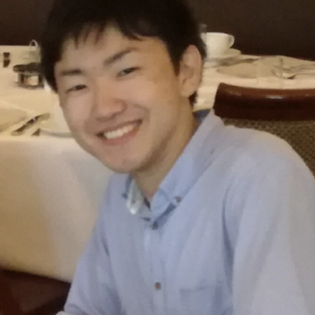

|
Kazuki Osawa / 大沢 和樹
Tokyo Institute of Technology, Japan
Institute for Infocomm Research (I²R), A*STAR, Singapore
東京工業大学
シンガポール科学技術研究庁
Email: oosawa.k.ad at m dot titech dot ac dot jp
Google Scholar
|

|
About Me
I am a Ph.D. candidate in Department of Computer Science, School of Computing, Tokyo Institute of Technology, supervised by Rio Yokota.
I am now working as a Research Assistant at the Institute for Infocomm Research (I²R ), A*STAR, advised by Chuan-Sheng Foo and Vijay Chandrasekhar.
I earned B.S. (2016) and M.S. (2018) in Computer Science from Tokyo Institute of Technology.
Research Interests
My research interests include optimization, approximation theory, high-performance computing (HPC), and deep learning.
My goal in the Ph.D. course is to propose theoretical optimization methods for deep neural networks which are compatible with research in the HPC field and to become a bridge between these fields.
Topics:
- Second-order optimization methods for deep learning
- Large-scale distributed computing
- Bayesian deep learning
- Low-rank approximation
Current Work
Publications
-
Evaluating the Compression Efficiency of the Filters in Convolutional Neural Networks,
Kazuki Osawa and Rio Yokota,
Artificial Neural Networks and Machine Learning – ICANN 2017, pp 459-466, Springer 2017.
-
Accelerating Matrix Multiplication in Deep Learning by Using Low-Rank Approximation,
Kazuki Osawa, Akira Sekiya, Hiroki Naganuma, and Rio Yokota,
2017 International Conference on High Performance Computing & Simulation (HPCS), pp 186-192, IEEE 2017.
Blog Posts
CV
My CV can be found
here. (Last updated: Dec 2018)